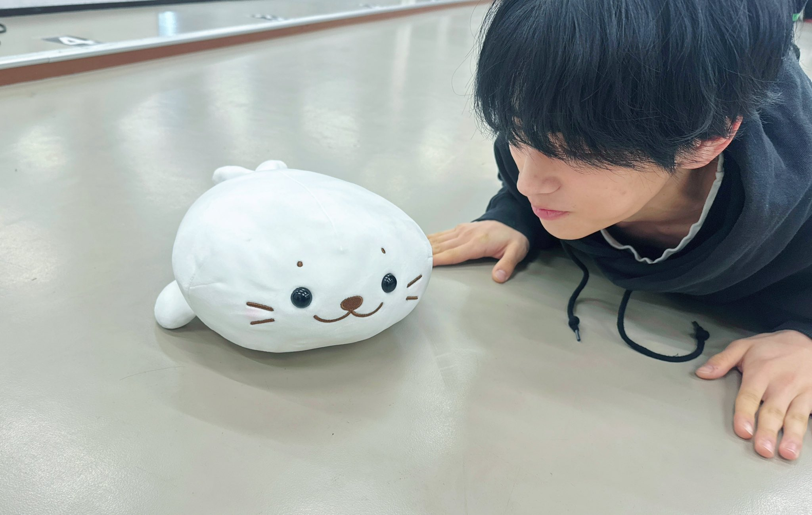

重力场 spinnin on it
如果我迷上了一件事，就会完全沉浸进去，根本看不到周围的东西。比如一旦进入拍摄状态，我满脑子就只剩下演技;开始健身的话，甚至会疯狂到每周练7天。
有时候连自己都觉得"我到底在干嘛啊"，但我就是想做到极致，把能做的全部都做到。
今天是周一🍵 虽然这里是大家互相拥抱的场所，但真的有做到好好地陪伴着大家吗？ 我不想抛下任何人啊。
大家开心的事情、努力过的事情、感到寂寞的事情， 以及现在感到难过的事情也都愿意跟我分享，我真的很高兴。
想让大家露出笑容！ 我想要的只有这个。 这周也一起加油吧🍵
可是亲爱的猪我果然还是觉得自己开心最重要...哪怕不安和寻求认同是人之常情
爱🐷人永远给你打150分~
一你希望《假面骑士Gotchard》成为一部怎样的作品?
——我觉得整个故事氛围非常明亮，是一部各个年龄层的人都能轻松观看的作品。如果观众们在观看之后，能对新的相遇感到兴奋，或者能够无所畏惧地迎接新的挑战......如果这部作品能成为那样鼓舞他人、推动他们前进的力量，那我会非常高兴。
——第一次拍摄变身场景时有没有什么趣事?
——当时我的心脏都要跳出来了(笑)。当然也很开心。拍摄前一天晚上因为太紧张几乎没睡，在家里对着全身镜反复练习后才去到现场，所以我觉得播出的影像里我的变身动作应该可以打120分吧! (在发布会上现场展示变身动作后)我觉得可以打150分!
插播猪妹妹特殊提供的叫醒服务一则，每天早上她会蹦蹦跳跳到您的家门口哦